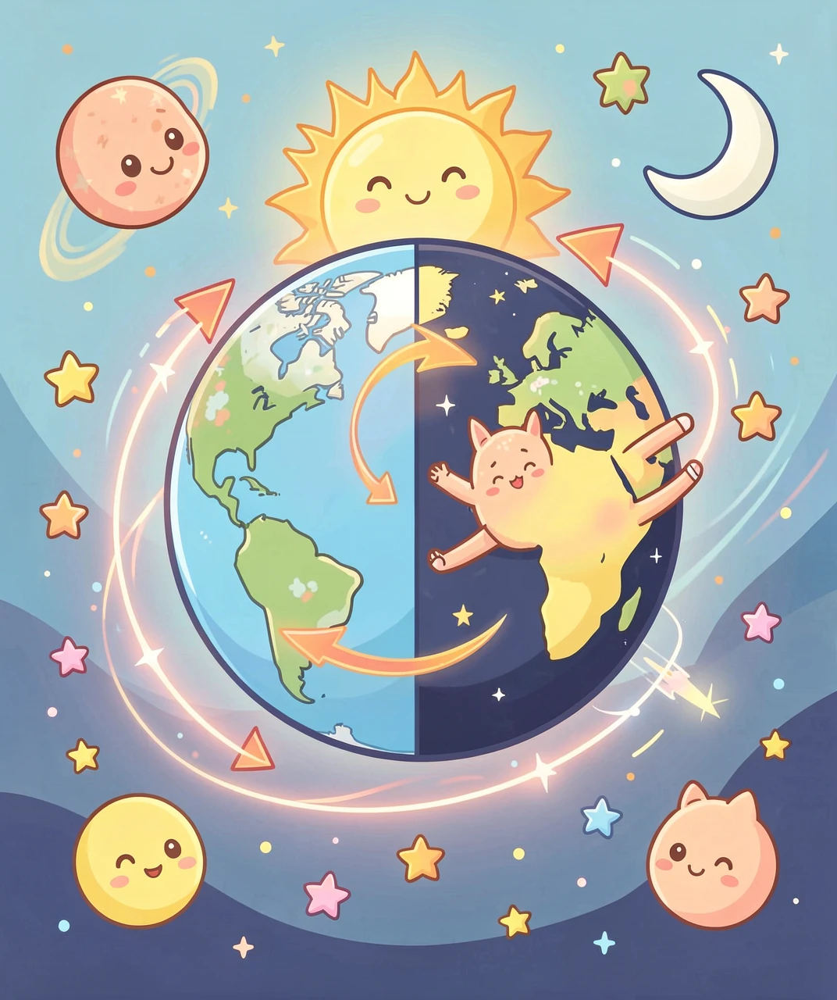
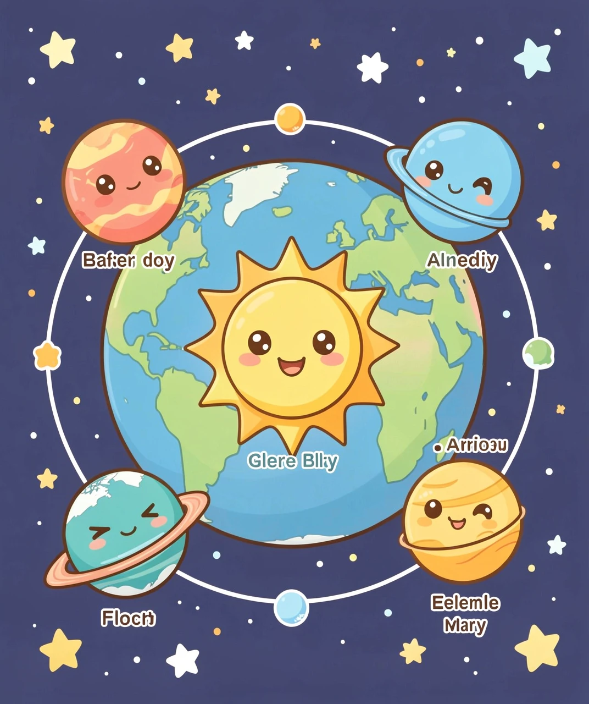
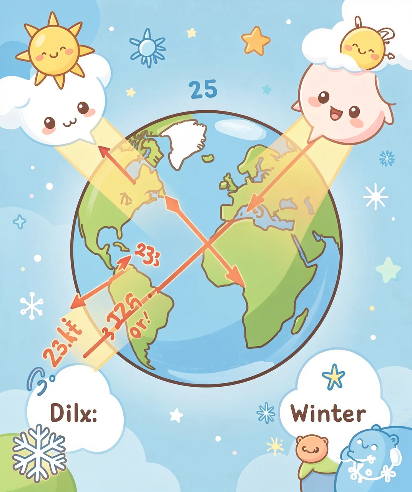
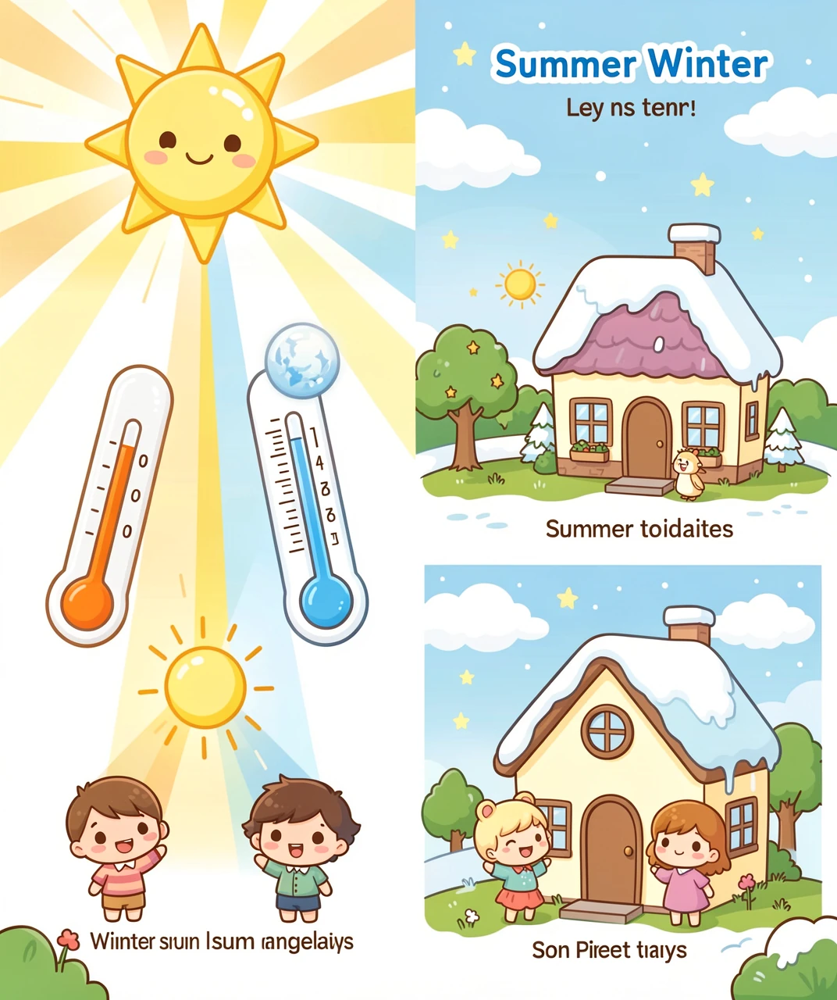
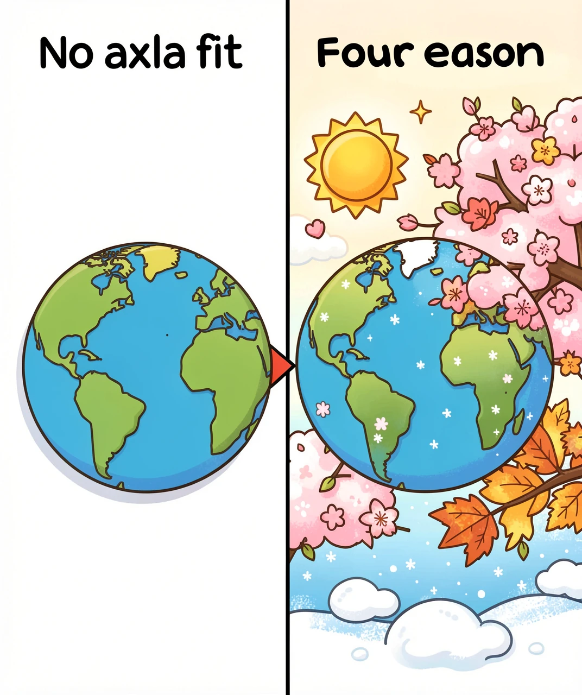

🔄 第一章：地球的「每日体操」——自转
你知道吗？从你早上醒来到晚上睡觉，地球一直在偷偷地转圈圈！就像一个芭蕾舞演员踮着脚尖不停地旋转一样，地球也在绕着一条看不见的线转动，这条线叫做地轴。
地球转一圈需要多久呢？答案是大约 24小时——正好一天！当你所在的地方转到朝向太阳时，就是白天；转到背对太阳时，就是黑夜。这就是为什么会有白天和黑夜的交替。
而且，地球自转的方向是从西向东，所以太阳总是从东边升起、西边落下。如果你站在太空中俯看地球，它是逆时针旋转的——就像一个慢慢转动的陀螺！
地球赤道上的东西都在以每小时约1670公里的速度飞转！比你坐的高铁快好几倍！但你完全感觉不到，因为你和周围的一切都在一起转——就像坐在平稳飞行的高铁里，不看窗外根本感觉不到在动。

🎢 第二章：地球的「年度旅行」——公转
除了每天自转一圈，地球还在做一件更大的事：绕着太阳转圈圈！这叫做公转。地球公转一圈需要大约 365天6小时——正好一年！
可是地球绕太阳转的轨道不是完美的圆形，而是微微扁的椭圆形。地球离太阳最近的时候大约1.47亿公里，最远的时候大约1.52亿公里。不过这个距离变化并不是造出四季的原因哦！
地球公转的轨道在一个平面上，叫做黄道面。地球一直在沿着这条「太空跑道」奔跑，速度大约每秒30公里——比任何火箭都快！
每年多出6小时，4年就多出24小时——正好一天！所以每4年我们就加一个2月29日，这年叫做「闰年」。不过整百年要能被400整除才是闰年，所以2100年不是闰年哦！

🎭 第三章：四季的「总导演」——倾斜的地轴
现在来到最关键的问题：如果地球自转有昼夜、公转有一年，那四季是怎么来的？
答案藏在一条看不见的线里——地轴是倾斜的！地球的自转轴不是直直地竖着的，而是歪了大约 23.5度。就是这个小歪斜，造就了春夏秋冬的魔法！
想象地球绕着太阳转圈时，始终歪着脖子。当北半球歪向太阳时，北半球收到更多阳光，白天更长——这就是夏天！同时南半球歪离太阳，收到更少阳光——就是冬天！
半年后地球转到太阳另一边，情况就反过来了：北半球歪离太阳过冬，南半球歪向太阳过夏。所以南北半球的季节永远是相反的！
太阳系八大行星几乎都歪着转！水星几乎不歪（0.03°），天王星最夸张（98°），简直是躺着转的！地球的23.5°刚好合适——不太歪也不太正，才有了温柔的分季四季。

☀️❄️ 第四章：春夏秋冬的「阳光密码」
地轴倾斜带来的真正变化是什么？是阳光的角度和照射时间！
夏天时，太阳高高挂在天上，阳光几乎是直射地面，能量集中；白天又长，晒太阳的时间多。地面吸收大量热量，气温升高——热！
冬天时，太阳在天上的位置低了很多，阳光斜斜地射来，能量分散到更大的面积上；白天又短，晒太阳的时间少。地面吸收的热量少了，气温降低——冷！
春天和秋天则是过渡期。阳光不太直也不太斜，白天和黑夜差不多长，气温适中——所以春秋最舒服！
在赤道附近的地方，一年四季阳光都很直射，所以没有明显的四季，只有雨季和旱季的区别。而在极地附近，阳光总是斜射，所以常年寒冷。
在北极圈和南极圈内，因为地轴倾斜，夏天会出现太阳永不落下的「极昼」——半夜天都是亮的！冬天则出现太阳永不升起的「极夜」——整天都是黑的！想象一下午夜打篮球不用开灯，或者中午12点需要开灯吃午饭，是不是很神奇？

🚀 第五章：如果地轴不歪……
让我们开个脑洞：如果地球的自转轴是直直的（0度倾斜），世界会变成什么样？
没有四季！每天世界各地阳光的角度都一样，气温天天差不多。赤道永远最热，两极永远最冷，中间地带永远不冷不热。
没有春秋分！因为每天都是昼夜等长——12小时白天、12小时黑夜，天天如此。
气候带变得极其简单：从赤道到两极均匀变化，没有季节波动。农业可能 simpler，但也会少很多乐趣——没有春天的花朵、秋天的红叶、冬天的雪人！
幸好地球歪了那23.5度，我们才有了一年四季的变化、丰富的生态环境、多样的农作物、还有滑雪和游泳两种不同的快乐！🌍✨
会！地球自转轴的倾斜角度在22.1°到24.5°之间缓慢变化，周期约41000年。这个变化由月球和太阳的引力「拉扯」造成。科学家发现，正是这种变化曾深刻影响了地球的冰河时期！所以23.5°不是永恒的，但变得非常慢，你一辈子都感觉不到。
